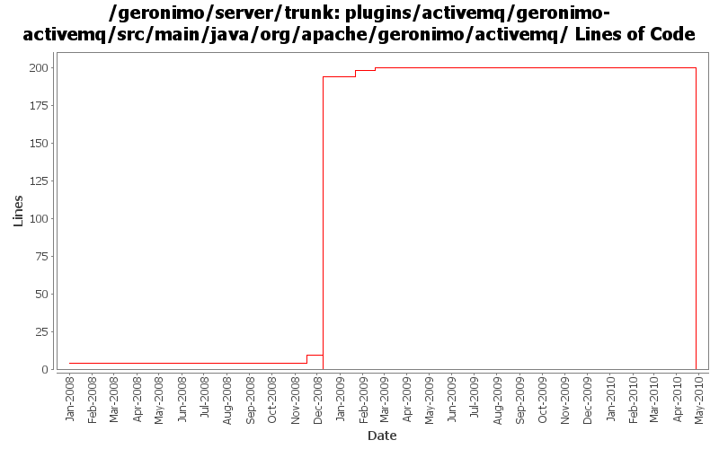

[root]/plugins/activemq/geronimo-activemq/src/main/java/org/apache/geronimo/activemq
 management
(0 files, 0 lines)
management
(0 files, 0 lines)

| Author | Changes | Lines of Code | Lines per Change |
|---|---|---|---|
| Totals | 25 (100.0%) | 219 (100.0%) | 8.7 |
| dwoods | 9 (36.0%) | 211 (96.3%) | 23.4 |
| jdillon | 5 (20.0%) | 5 (2.3%) | 1.0 |
| gdamour | 1 (4.0%) | 3 (1.4%) | 3.0 |
| xuhaihong | 1 (4.0%) | 0 (0.0%) | 0.0 |
| gawor | 5 (20.0%) | 0 (0.0%) | 0.0 |
| djencks | 4 (16.0%) | 0 (0.0%) | 0.0 |
Remove old (non-blueprint) based activemq modules
0 lines of code changed in 5 files:
GERONIMO-4931 Run activemq under (aries) blueprint using xbean-blueprint
0 lines of code changed in 2 files:
GERONIMO-4941 JMS connector ports are not listed on the console after the server started
0 lines of code changed in 1 file:
Set system property 'activemq.geronimo.home.url' to the root server instance. This is more handy as this system property is used to locate the resource 'var/config/config-substitutions.properties' which is a per server instance resource.
3 lines of code changed in 1 file:
GERONIMO-4475 Improve JMS portlet for Borker configuration. Applied 4 patches from Ivan.
11 lines of code changed in 2 files:
GERONIMO-4337 rename AMQ5 modules to old names that apps expect
185 lines of code changed in 2 files:
GERONIMO-4337 rename AMQ5 modules to old names that apps expect
9 lines of code changed in 2 files:
GERONIMO-4337 remove old AMQ4 based modules
0 lines of code changed in 2 files:
GERONIMO-4404 ActiveMQ v4.1 connectors default to 0.0.0.0 when ServerHostname is set to localhost. Including in trunk until AMQ5 integration is complete. Thanks Shawn for the patch.
6 lines of code changed in 1 file:
More loggers back to static
2 lines of code changed in 2 files:
(GERONIMO-3985) Use SLF4J as the primary logging facade for Geronimo
3 lines of code changed in 3 files:
GERONIMO-3718 experimental patch to speed up resource-refs.
0 lines of code changed in 2 files: